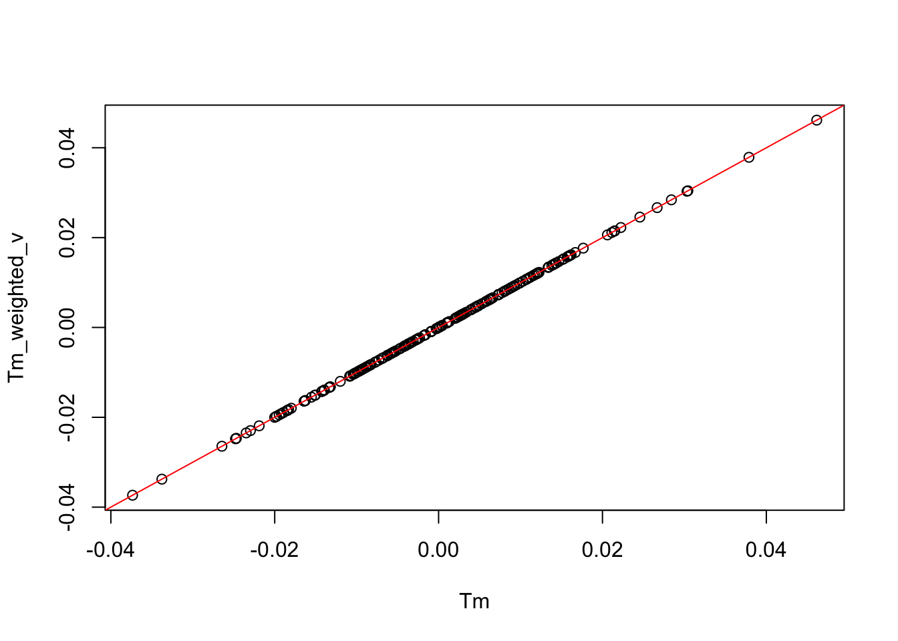
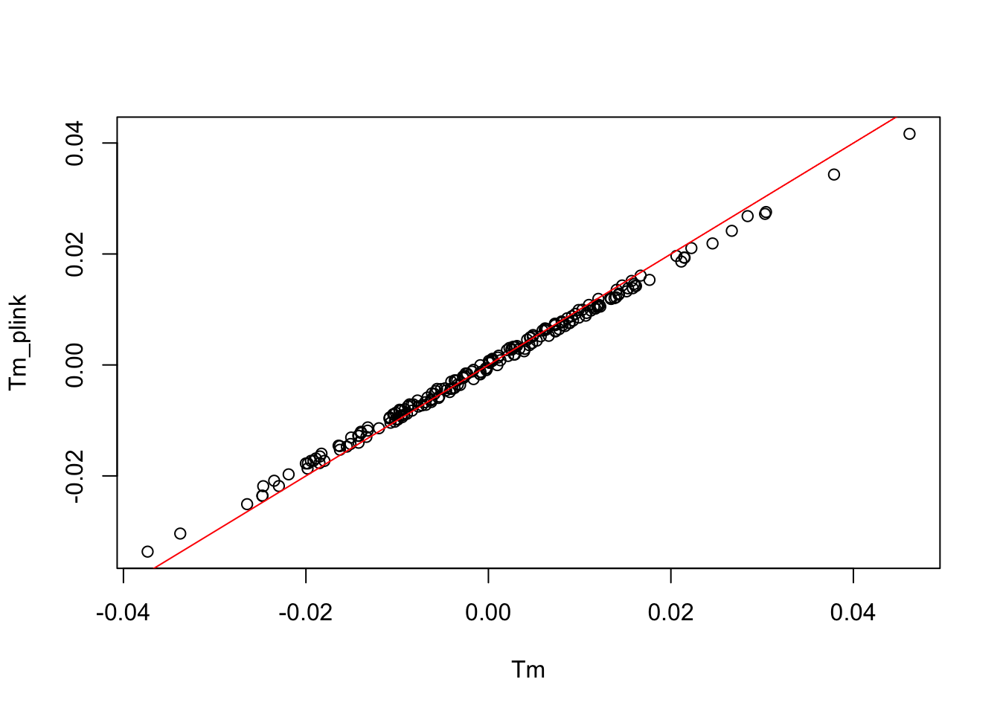
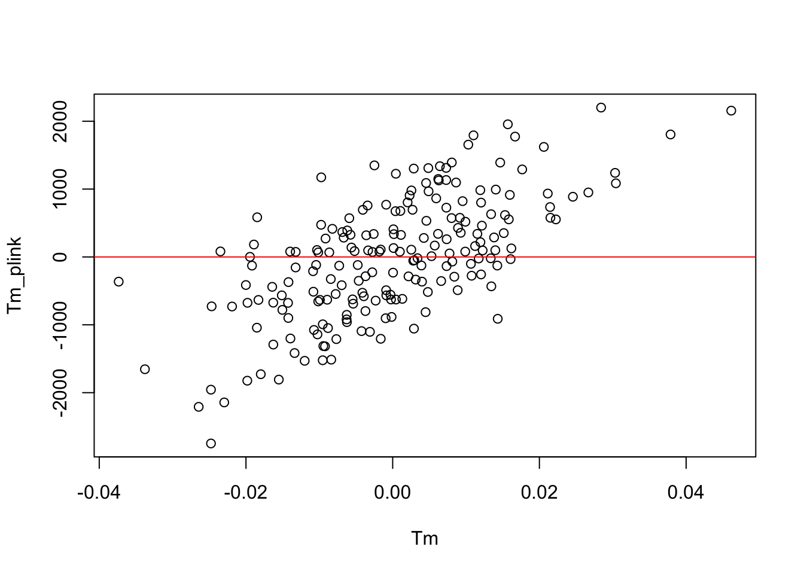
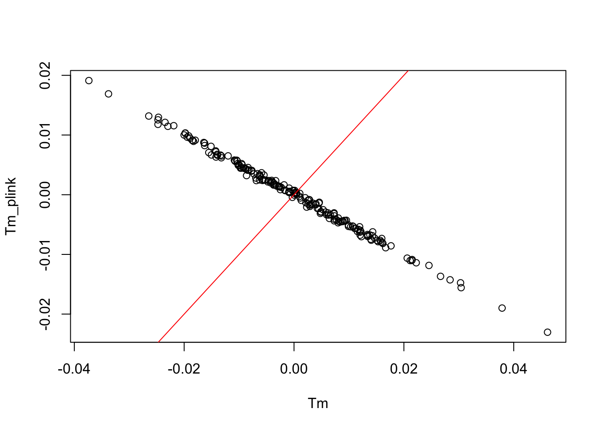

Last updated: 2021-03-15
Checks: 7 0
Knit directory: polygenic_adaptation_stratification/analysis/
This reproducible R Markdown analysis was created with workflowr (version 1.6.2). The Checks tab describes the reproducibility checks that were applied when the results were created. The Past versions tab lists the development history.
Great! Since the R Markdown file has been committed to the Git repository, you know the exact version of the code that produced these results.
Great job! The global environment was empty. Objects defined in the global environment can affect the analysis in your R Markdown file in unknown ways. For reproduciblity it’s best to always run the code in an empty environment.
The command set.seed(20201015) was run prior to running the code in the R Markdown file. Setting a seed ensures that any results that rely on randomness, e.g. subsampling or permutations, are reproducible.
Great job! Recording the operating system, R version, and package versions is critical for reproducibility.
Nice! There were no cached chunks for this analysis, so you can be confident that you successfully produced the results during this run.
Great job! Using relative paths to the files within your workflowr project makes it easier to run your code on other machines.
Great! You are using Git for version control. Tracking code development and connecting the code version to the results is critical for reproducibility.
The results in this page were generated with repository version b2c89c7. See the Past versions tab to see a history of the changes made to the R Markdown and HTML files.
Note that you need to be careful to ensure that all relevant files for the analysis have been committed to Git prior to generating the results (you can use wflow_publish or wflow_git_commit). workflowr only checks the R Markdown file, but you know if there are other scripts or data files that it depends on. Below is the status of the Git repository when the results were generated:
Ignored files:
Ignored: .DS_Store
Ignored: .Rhistory
Ignored: .Rproj.user/
Ignored: .snakemake/
Ignored: analysis/.DS_Store
Ignored: code/.DS_Store
Ignored: code/Calculate_Tm/.ipynb_checkpoints/
Ignored: data/projection_example/
Ignored: output/Calculate_Tm/
Ignored: output/PRS/4PopSplit/S1/C1/genos-test_common.c.log
Ignored: output/PRS/4PopSplit/S1/C1/genos-test_common.c.p.log
Ignored: output/PRS/4PopSplit/S1/C1/genos-test_common.nc.log
Ignored: output/PRS/4PopSplit/S1/C2/genos-test_common.c.log
Ignored: output/PRS/4PopSplit/S1/C2/genos-test_common.c.p.log
Ignored: output/PRS/4PopSplit/S1/C2/genos-test_common.nc.log
Ignored: output/PRS/4PopSplit/S2/C1/genos-test_common.c.log
Ignored: output/PRS/4PopSplit/S2/C1/genos-test_common.c.p.log
Ignored: output/PRS/4PopSplit/S2/C1/genos-test_common.nc.log
Ignored: output/PRS/4PopSplit/S2/C2/genos-test_common.c.log
Ignored: output/PRS/4PopSplit/S2/C2/genos-test_common.c.p.log
Ignored: output/PRS/4PopSplit/S2/C2/genos-test_common.nc.log
Ignored: output/PRS/4PopSplit/S3/
Ignored: output/PRS/4PopSplit/S4/
Ignored: output/PRS/4PopSplit/S5/
Ignored: output/PRS/4PopSplit/S6/
Ignored: output/PRS/4PopSplit/S7/
Ignored: output/PRS/4PopSplit/S8/
Ignored: output/PRS/4PopSplit/S9/
Ignored: output/Run_GWAS/
Ignored: output/Simulate_Genotypes/4PopSplit/S1/C1/common_snp_ids.txt
Ignored: output/Simulate_Genotypes/4PopSplit/S1/C1/genos-gwas.log
Ignored: output/Simulate_Genotypes/4PopSplit/S1/C1/genos-gwas_common.afreq
Ignored: output/Simulate_Genotypes/4PopSplit/S1/C1/genos-gwas_common.log
Ignored: output/Simulate_Genotypes/4PopSplit/S1/C1/genos-gwas_common.pgen
Ignored: output/Simulate_Genotypes/4PopSplit/S1/C1/genos-gwas_common.psam
Ignored: output/Simulate_Genotypes/4PopSplit/S1/C1/genos-gwas_common.pvar
Ignored: output/Simulate_Genotypes/4PopSplit/S1/C1/genos-test-big.log
Ignored: output/Simulate_Genotypes/4PopSplit/S1/C1/genos-test.log
Ignored: output/Simulate_Genotypes/4PopSplit/S1/C1/genos-test_common.afreq
Ignored: output/Simulate_Genotypes/4PopSplit/S1/C1/genos-test_common.log
Ignored: output/Simulate_Genotypes/4PopSplit/S1/C1/genos-test_common.pgen
Ignored: output/Simulate_Genotypes/4PopSplit/S1/C1/genos-test_common.psam
Ignored: output/Simulate_Genotypes/4PopSplit/S1/C1/genos-test_common.pvar
Ignored: output/Simulate_Genotypes/4PopSplit/S1/C2/common_snp_ids.txt
Ignored: output/Simulate_Genotypes/4PopSplit/S1/C2/genos-gwas.log
Ignored: output/Simulate_Genotypes/4PopSplit/S1/C2/genos-gwas_common.afreq
Ignored: output/Simulate_Genotypes/4PopSplit/S1/C2/genos-gwas_common.log
Ignored: output/Simulate_Genotypes/4PopSplit/S1/C2/genos-gwas_common.pgen
Ignored: output/Simulate_Genotypes/4PopSplit/S1/C2/genos-gwas_common.psam
Ignored: output/Simulate_Genotypes/4PopSplit/S1/C2/genos-gwas_common.pvar
Ignored: output/Simulate_Genotypes/4PopSplit/S1/C2/genos-test-big.log
Ignored: output/Simulate_Genotypes/4PopSplit/S1/C2/genos-test.log
Ignored: output/Simulate_Genotypes/4PopSplit/S1/C2/genos-test_common.afreq
Ignored: output/Simulate_Genotypes/4PopSplit/S1/C2/genos-test_common.log
Ignored: output/Simulate_Genotypes/4PopSplit/S1/C2/genos-test_common.pgen
Ignored: output/Simulate_Genotypes/4PopSplit/S1/C2/genos-test_common.psam
Ignored: output/Simulate_Genotypes/4PopSplit/S1/C2/genos-test_common.pvar
Ignored: output/Simulate_Genotypes/4PopSplit/S1/ff.txt
Ignored: output/Simulate_Genotypes/4PopSplit/S1/genos.log
Ignored: output/Simulate_Genotypes/4PopSplit/S2/C1/common_snp_ids.txt
Ignored: output/Simulate_Genotypes/4PopSplit/S2/C1/genos-gwas.log
Ignored: output/Simulate_Genotypes/4PopSplit/S2/C1/genos-gwas_common.afreq
Ignored: output/Simulate_Genotypes/4PopSplit/S2/C1/genos-gwas_common.log
Ignored: output/Simulate_Genotypes/4PopSplit/S2/C1/genos-gwas_common.pgen
Ignored: output/Simulate_Genotypes/4PopSplit/S2/C1/genos-gwas_common.psam
Ignored: output/Simulate_Genotypes/4PopSplit/S2/C1/genos-gwas_common.pvar
Ignored: output/Simulate_Genotypes/4PopSplit/S2/C1/genos-test-big.log
Ignored: output/Simulate_Genotypes/4PopSplit/S2/C1/genos-test.log
Ignored: output/Simulate_Genotypes/4PopSplit/S2/C1/genos-test_common.afreq
Ignored: output/Simulate_Genotypes/4PopSplit/S2/C1/genos-test_common.log
Ignored: output/Simulate_Genotypes/4PopSplit/S2/C1/genos-test_common.pgen
Ignored: output/Simulate_Genotypes/4PopSplit/S2/C1/genos-test_common.psam
Ignored: output/Simulate_Genotypes/4PopSplit/S2/C1/genos-test_common.pvar
Ignored: output/Simulate_Genotypes/4PopSplit/S2/C2/common_snp_ids.txt
Ignored: output/Simulate_Genotypes/4PopSplit/S2/C2/genos-gwas.log
Ignored: output/Simulate_Genotypes/4PopSplit/S2/C2/genos-gwas_common.afreq
Ignored: output/Simulate_Genotypes/4PopSplit/S2/C2/genos-gwas_common.log
Ignored: output/Simulate_Genotypes/4PopSplit/S2/C2/genos-gwas_common.pgen
Ignored: output/Simulate_Genotypes/4PopSplit/S2/C2/genos-gwas_common.psam
Ignored: output/Simulate_Genotypes/4PopSplit/S2/C2/genos-gwas_common.pvar
Ignored: output/Simulate_Genotypes/4PopSplit/S2/C2/genos-test-big.log
Ignored: output/Simulate_Genotypes/4PopSplit/S2/C2/genos-test.log
Ignored: output/Simulate_Genotypes/4PopSplit/S2/C2/genos-test_common.afreq
Ignored: output/Simulate_Genotypes/4PopSplit/S2/C2/genos-test_common.log
Ignored: output/Simulate_Genotypes/4PopSplit/S2/C2/genos-test_common.pgen
Ignored: output/Simulate_Genotypes/4PopSplit/S2/C2/genos-test_common.psam
Ignored: output/Simulate_Genotypes/4PopSplit/S2/C2/genos-test_common.pvar
Ignored: output/Simulate_Genotypes/4PopSplit/S2/ff.txt
Ignored: output/Simulate_Genotypes/4PopSplit/S2/genos.log
Ignored: output/Simulate_Genotypes/4PopSplit/S3/
Ignored: output/Simulate_Genotypes/4PopSplit/S4/
Ignored: output/Simulate_Genotypes/4PopSplit/S5/
Ignored: output/Simulate_Genotypes/4PopSplit/S6/
Ignored: output/Simulate_Genotypes/4PopSplit/S7/
Ignored: output/Simulate_Genotypes/4PopSplit/S8/
Ignored: output/Simulate_Genotypes/4PopSplit/S9/
Ignored: output/Simulate_Phenotypes/4PopSplit/S1/C1/genos-gwas_common.gvalue.log
Ignored: output/Simulate_Phenotypes/4PopSplit/S1/C2/genos-gwas_common.gvalue.log
Ignored: output/Simulate_Phenotypes/4PopSplit/S2/C1/genos-gwas_common.gvalue.log
Ignored: output/Simulate_Phenotypes/4PopSplit/S2/C2/genos-gwas_common.gvalue.log
Ignored: output/Simulate_Phenotypes/4PopSplit/S3/
Ignored: output/Simulate_Phenotypes/4PopSplit/S4/
Ignored: output/Simulate_Phenotypes/4PopSplit/S5/
Ignored: output/Simulate_Phenotypes/4PopSplit/S6/
Ignored: output/Simulate_Phenotypes/4PopSplit/S7/
Ignored: output/Simulate_Phenotypes/4PopSplit/S8/
Ignored: output/Simulate_Phenotypes/4PopSplit/S9/
Unstaged changes:
Modified: analysis/projection_example.Rmd
Deleted: output/PRS/4PopSplit/S1/C1/genos-gwas_common-Tm.c.betas
Deleted: output/PRS/4PopSplit/S1/C1/genos-gwas_common-Tm.c.p.betas
Deleted: output/PRS/4PopSplit/S1/C1/genos-gwas_common-Tm.nc.betas
Modified: output/PRS/4PopSplit/S1/C1/genos-gwas_common.c.betas
Modified: output/PRS/4PopSplit/S1/C1/genos-gwas_common.c.p.betas
Modified: output/PRS/4PopSplit/S1/C1/genos-gwas_common.nc.betas
Deleted: output/PRS/4PopSplit/S1/C1/genos-test_common-Tm.c.p.sscore
Deleted: output/PRS/4PopSplit/S1/C1/genos-test_common-Tm.c.sscore
Deleted: output/PRS/4PopSplit/S1/C1/genos-test_common-Tm.nc.sscore
Modified: output/PRS/4PopSplit/S1/C1/genos-test_common.c.p.sscore
Modified: output/PRS/4PopSplit/S1/C1/genos-test_common.c.sscore
Modified: output/PRS/4PopSplit/S1/C1/genos-test_common.nc.sscore
Deleted: output/PRS/4PopSplit/S1/C1/genos-test_common.true.sscore
Deleted: output/PRS/4PopSplit/S1/C2/genos-gwas_common-Tm.c.betas
Deleted: output/PRS/4PopSplit/S1/C2/genos-gwas_common-Tm.c.p.betas
Deleted: output/PRS/4PopSplit/S1/C2/genos-gwas_common-Tm.nc.betas
Modified: output/PRS/4PopSplit/S1/C2/genos-gwas_common.c.betas
Modified: output/PRS/4PopSplit/S1/C2/genos-gwas_common.c.p.betas
Modified: output/PRS/4PopSplit/S1/C2/genos-gwas_common.nc.betas
Deleted: output/PRS/4PopSplit/S1/C2/genos-test_common-Tm.c.p.sscore
Deleted: output/PRS/4PopSplit/S1/C2/genos-test_common-Tm.c.sscore
Deleted: output/PRS/4PopSplit/S1/C2/genos-test_common-Tm.nc.sscore
Modified: output/PRS/4PopSplit/S1/C2/genos-test_common.c.p.sscore
Modified: output/PRS/4PopSplit/S1/C2/genos-test_common.c.sscore
Modified: output/PRS/4PopSplit/S1/C2/genos-test_common.nc.sscore
Deleted: output/PRS/4PopSplit/S1/C2/genos-test_common.true.sscore
Modified: output/PRS/4PopSplit/S2/C1/genos-gwas_common.c.betas
Modified: output/PRS/4PopSplit/S2/C1/genos-gwas_common.c.p.betas
Modified: output/PRS/4PopSplit/S2/C1/genos-gwas_common.nc.betas
Modified: output/PRS/4PopSplit/S2/C1/genos-test_common.c.p.sscore
Modified: output/PRS/4PopSplit/S2/C1/genos-test_common.c.sscore
Modified: output/PRS/4PopSplit/S2/C1/genos-test_common.nc.sscore
Modified: output/PRS/4PopSplit/S2/C2/genos-gwas_common.c.betas
Modified: output/PRS/4PopSplit/S2/C2/genos-gwas_common.c.p.betas
Modified: output/PRS/4PopSplit/S2/C2/genos-gwas_common.nc.betas
Modified: output/PRS/4PopSplit/S2/C2/genos-test_common.c.p.sscore
Modified: output/PRS/4PopSplit/S2/C2/genos-test_common.c.sscore
Modified: output/PRS/4PopSplit/S2/C2/genos-test_common.nc.sscore
Modified: output/Simulate_Phenotypes/4PopSplit/S1/C1/genos-gwas_common.effects.txt
Modified: output/Simulate_Phenotypes/4PopSplit/S1/C1/genos-gwas_common.gvalue.sscore
Modified: output/Simulate_Phenotypes/4PopSplit/S1/C1/genos-gwas_common.phenos.txt
Modified: output/Simulate_Phenotypes/4PopSplit/S1/C2/genos-gwas_common.effects.txt
Modified: output/Simulate_Phenotypes/4PopSplit/S1/C2/genos-gwas_common.gvalue.sscore
Modified: output/Simulate_Phenotypes/4PopSplit/S1/C2/genos-gwas_common.phenos.txt
Modified: output/Simulate_Phenotypes/4PopSplit/S2/C1/genos-gwas_common.effects.txt
Modified: output/Simulate_Phenotypes/4PopSplit/S2/C1/genos-gwas_common.gvalue.sscore
Modified: output/Simulate_Phenotypes/4PopSplit/S2/C1/genos-gwas_common.phenos.txt
Modified: output/Simulate_Phenotypes/4PopSplit/S2/C2/genos-gwas_common.effects.txt
Modified: output/Simulate_Phenotypes/4PopSplit/S2/C2/genos-gwas_common.gvalue.sscore
Modified: output/Simulate_Phenotypes/4PopSplit/S2/C2/genos-gwas_common.phenos.txt
Modified: snakefile
Note that any generated files, e.g. HTML, png, CSS, etc., are not included in this status report because it is ok for generated content to have uncommitted changes.
These are the previous versions of the repository in which changes were made to the R Markdown (analysis/Projection_plink2.Rmd) and HTML (docs/Projection_plink2.html) files. If you’ve configured a remote Git repository (see ?wflow_git_remote), click on the hyperlinks in the table below to view the files as they were in that past version.
| File | Version | Author | Date | Message |
|---|---|---|---|---|
| Rmd | b2c89c7 | jgblanc | 2021-03-15 | wflow_publish(c(“analysis/index.Rmd”, “analysis/Projection_plink2.Rmd”)) |
\[T_m = \frac{M X^T (XX^T)^{-1}T}{L^2}\]
# Read GWAS Matrix
pvar <- NewPvar("../output/Simulate_Genotypes/4PopSplit/S2/C1/genos-gwas_common.pvar")
d1 <- NewPgen("../output/Simulate_Genotypes/4PopSplit/S2/C1/genos-gwas_common.pgen")
M <- ReadList(d1,seq(1,95974), meanimpute=F)
M <- scale(M)
# Read in Test Matrix
pvar <- NewPvar("../output/Simulate_Genotypes/4PopSplit/S2/C1/genos-test_common.pvar")
d1 <- NewPgen("../output/Simulate_Genotypes/4PopSplit/S2/C1/genos-test_common.pgen")
X <- ReadList(d1,seq(1,95974), meanimpute=F)
X <- scale(X)
# Read in Test Vector
#Tvec <- fread("../output/Calculate_Tm/4PopSplit/S1/C1/Tvec.txt")$V1
L <- ncol(X)
tvec <- runif(200)
ctvec <- (tvec-mean(tvec))
Tvec <- ctvec/sqrt(sum(ctvec^2))
head(Tvec)[1] -0.109849080 -0.046266741 0.116218351 -0.104822657 0.037839696
[6] -0.003246035Calculate Tm using SVD
# Do SVD
s <- svd(X)
u <- s$u
d <- s$d
v <- s$v
# Square singular values and divide by L
svd_vals <- (d^2 / L)
n <- nrow(X)
# Calculate Tm
K = (M %*% t(X)) / (L)
Tm = K %*% u[,1:(n-1)] %*% diag(1/svd_vals[1:(n-1)]) %*% t(u[,1:(n-1)]) %*% TvecCalculate Tm via projecting each eigenvector individually and weighting by the Betas
betas <- t(u) %*% Tvec
tmp <- M %*% t(X)%*% u[,1:(n-1)] %*% diag(1/svd_vals[1:(n-1)]) %*% t(u[,1:(n-1)]) %*% u[,1:(n-1)]
Tm_weighted <- tmp %*% betas[1:(n-1)] / L
plot(Tm, Tm_weighted)
abline(a = 0, b =1 , col = "red")Calculate Tm via projecting each eigenvector individually using right singular values (loadings) and weighting by the Betas
tmp <- M %*% v[,1:(n-1)] %*% diag(1/d[1:(n-1)])
Tm_weighted_v <- tmp %*% betas[1:(n-1)]
plot(Tm, Tm_weighted_v)
abline(a = 0, b =1 , col = "red")
Do PCA in plink (including loadings)
~/Desktop/plink2 --pfile ../output/Simulate_Genotypes/4PopSplit/S2/C1/genos-test_common \
--pca biallelic-var-wts 199 \
--out ../data/projection_example/S2_PCPLINK v2.00a3 AVX2 (25 Feb 2020) www.cog-genomics.org/plink/2.0/
(C) 2005-2020 Shaun Purcell, Christopher Chang GNU General Public License v3
Logging to ../data/projection_example/S2_PC.log.
Options in effect:
--out ../data/projection_example/S2_PC
--pca biallelic-var-wts 199
--pfile ../output/Simulate_Genotypes/4PopSplit/S2/C1/genos-test_common
Start time: Mon Mar 15 12:21:20 2021
8192 MiB RAM detected; reserving 4096 MiB for main workspace.
Using up to 8 compute threads.
200 samples (0 females, 0 males, 200 ambiguous; 200 founders) loaded from
../output/Simulate_Genotypes/4PopSplit/S2/C1/genos-test_common.psam.
95974 variants loaded from
../output/Simulate_Genotypes/4PopSplit/S2/C1/genos-test_common.pvar.
Note: No phenotype data present.
Calculating allele frequencies... 0%68%done.
Constructing GRM: 0%1%2%3%4%5%6%7%8%9%10%11%12%13%14%15%16%17%18%19%20%21%22%23%24%25%26%27%28%29%30%31%32%33%34%35%36%37%38%39%40%41%42%43%44%45%46%47%48%49%50%51%52%53%54%55%56%57%58%59%60%61%62%63%64%65%66%67%68%69%70%71%72%73%74%75%76%77%78%79%80%81%82%83%84%85%86%87%88%89%90%91%92%93%94%95%96%97%98%99%done.
Extracting eigenvalues and eigenvectors... done.
--pca: Variant weights written to ../data/projection_example/S2_PC.eigenvec.var
.
--pca: Eigenvectors written to ../data/projection_example/S2_PC.eigenvec , and
eigenvalues written to ../data/projection_example/S2_PC.eigenval .
End time: Mon Mar 15 12:21:21 2021Calculating Tm, creating pseudoinverse with plink vecs
plink_vecs <-fread("../data/projection_example/S2_PC.eigenvec")[,3:201]
plink_vecs <- apply(plink_vecs, 2, as.numeric)
plink_vals <- fread("../data/projection_example/S2_PC.eigenval")$V1
betas_plink <- t(plink_vecs) %*% Tvec
tmp <- M %*% t(X)%*% plink_vecs[,1:(n-1)] %*% diag(1/plink_vals[1:(n-1)]) %*% t(plink_vecs[,1:(n-1)]) %*% plink_vecs[,1:(n-1)]
Tm_plink <- tmp %*% betas_plink[1:(n-1)] / L
plot(Tm, Tm_plink)
abline(a = 0, b =1 , col = "red")
Calculate Tm, using loadings from plink
plink_loadings <- fread("../data/projection_example/S2_PC.eigenvec.var")[,5:203]
plink_loadings <- apply(plink_loadings, 2, as.numeric)
tmp <- M %*% plink_loadings %*% diag(1/sqrt(plink_vals[1:(n-1)]))
Tm_plink <- tmp %*% diag(1/sqrt(plink_vals)) %*% betas_plink[1:(n-1)]
plot(Tm, Tm_plink)
abline(a = 0, b =1 , col = "red")
Calculate using projection step from plink2
~/Desktop/plink2 --pfile ../output/Simulate_Genotypes/4PopSplit/S2/C1/genos-test_common \
--pca allele-wts 199 \
--out ../data/projection_example/S2_PC_proj
~/Desktop/plink2 --pfile ../output/Simulate_Genotypes/4PopSplit/S2/C1/genos-gwas_common \
--score ../data/projection_example/S2_PC_proj.eigenvec.allele 2 5 header-read no-mean-imputation \
variance-standardize \
--score-col-nums 6-204 \
--out ../data/projection_example/S2_projectionPLINK v2.00a3 AVX2 (25 Feb 2020) www.cog-genomics.org/plink/2.0/
(C) 2005-2020 Shaun Purcell, Christopher Chang GNU General Public License v3
Logging to ../data/projection_example/S2_PC_proj.log.
Options in effect:
--out ../data/projection_example/S2_PC_proj
--pca allele-wts 199
--pfile ../output/Simulate_Genotypes/4PopSplit/S2/C1/genos-test_common
Start time: Mon Mar 15 12:21:30 2021
8192 MiB RAM detected; reserving 4096 MiB for main workspace.
Using up to 8 compute threads.
200 samples (0 females, 0 males, 200 ambiguous; 200 founders) loaded from
../output/Simulate_Genotypes/4PopSplit/S2/C1/genos-test_common.psam.
95974 variants loaded from
../output/Simulate_Genotypes/4PopSplit/S2/C1/genos-test_common.pvar.
Note: No phenotype data present.
Calculating allele frequencies... 0%68%done.
Constructing GRM: 0%1%2%3%4%5%6%7%8%9%10%11%12%13%14%15%16%17%18%19%20%21%22%23%24%25%26%27%28%29%30%31%32%33%34%35%36%37%38%39%40%41%42%43%44%45%46%47%48%49%50%51%52%53%54%55%56%57%58%59%60%61%62%63%64%65%66%67%68%69%70%71%72%73%74%75%76%77%78%79%80%81%82%83%84%85%86%87%88%89%90%91%92%93%94%95%96%97%98%99%done.
Extracting eigenvalues and eigenvectors... done.
--pca: Allele weights written to
../data/projection_example/S2_PC_proj.eigenvec.allele .
--pca: Eigenvectors written to ../data/projection_example/S2_PC_proj.eigenvec ,
and eigenvalues written to ../data/projection_example/S2_PC_proj.eigenval .
End time: Mon Mar 15 12:21:31 2021
PLINK v2.00a3 AVX2 (25 Feb 2020) www.cog-genomics.org/plink/2.0/
(C) 2005-2020 Shaun Purcell, Christopher Chang GNU General Public License v3
Logging to ../data/projection_example/S2_projection.log.
Options in effect:
--out ../data/projection_example/S2_projection
--pfile ../output/Simulate_Genotypes/4PopSplit/S2/C1/genos-gwas_common
--score ../data/projection_example/S2_PC_proj.eigenvec.allele 2 5 header-read no-mean-imputation variance-standardize
--score-col-nums 6-204
Start time: Mon Mar 15 12:21:31 2021
8192 MiB RAM detected; reserving 4096 MiB for main workspace.
Using up to 8 compute threads.
200 samples (0 females, 0 males, 200 ambiguous; 200 founders) loaded from
../output/Simulate_Genotypes/4PopSplit/S2/C1/genos-gwas_common.psam.
95974 variants loaded from
../output/Simulate_Genotypes/4PopSplit/S2/C1/genos-gwas_common.pvar.
Note: No phenotype data present.
Calculating allele frequencies... 0%68%done.
--score: 10k variants loaded.
--score: 20k variants loaded.
--score: 30k variants loaded.
--score: 40k variants loaded.
--score: 50k variants loaded.
--score: 60k variants loaded.
--score: 70k variants loaded.
--score: 80k variants loaded.
--score: 90k variants loaded.
--score: 95974 variants processed.
--score: Results written to ../data/projection_example/S2_projection.sscore .
End time: Mon Mar 15 12:21:32 2021proj_vecs_plink <- fread("../data/projection_example/S2_projection.sscore")[,5:203]
proj_vecs_plink <- apply(proj_vecs_plink, 2, as.numeric)
Tm_plink <- proj_vecs_plink %*% diag(1/sqrt(plink_vals)) %*% betas_plink[1:199]
plot(Tm, Tm_plink)
abline(a = 0, b =1 , col = "red")
Calculate Tm via plink2
#~/Desktop/plink2 --pfile ../output/Simulate_Genotypes/4PopSplit/S1/C1/genos-test_common \
# --pca allele-wts 199 \
# --out ../data/projection_example/S1_PC#~/Desktop/plink2 --pfile ../output/Simulate_Genotypes/4PopSplit/S1/C1/genos-test_common \
# --score ../data/projection_example/S1_PC.eigenvec.allele 2 5 header-read no-mean-imputation \
# variance-standardize \
# --score-col-nums 6-204 \
# --out ../data/projection_example/S1_projection#~/Desktop/plink2 --pfile ../output/Simulate_Genotypes/4PopSplit/S1/C1/genos-gwas_common \
# --score ../data/projection_example/S1_PC.eigenvec.allele 2 5 header-read no-mean-imputation \
# variance-standardize \
# --score-col-nums 6-204 \
# --out ../data/projection_example/S1_projection#plink_vecs <- fread("../data/projection_example/S1_PC.eigenvec")[,3:201]
#plink_vecs <- apply(plink_vecs, 2, as.numeric)
#betas <- t(plink_vecs) %*% Tvec
#proj_vecs_plink <- fread("../data/projection_example/S1_projection.sscore")[,5:203]
#proj_vecs_plink <- apply(proj_vecs_plink, 2, as.numeric)
#plink_vals <- fread("../data/projection_example/S1_PC.eigenval")
#tst <- proj_vecs_plink %*% diag(1/sqrt(plink_vals$V1))
#Tm_plink <- tst %*% betas[1:199]
#plot(Tm, -1.8 * Tm_plink)
#abline(a = 0, b =1 , col = "red")# plink_loadings <- fread("../data/projection_example/S1_PC.eigenvec.var")[,5:203]
# plink_loadings <- apply(plink_loadings, 2, as.numeric)
# W <- scale(M) %*% plink_loadings
# betas <- t(plink_vecs) %*% Tvec
# Tm_man <- W %*% betas[1:199] / (L)
#
# plot(Tm_plink, Tm_man)
# abline(a = 0, b =1 , col = "red")#~/Desktop/plink2 --pfile ../output/Simulate_Genotypes/4PopSplit/S1/C1/genos-test_common \
# --score ../data/projection_example/S1_PC.eigenvec.allele 2 5 header-read no-mean-imputation \
# variance-standardize \
# --score-col-nums 6-204 \
# --out ../data/projection_example/S1_projection_test# plink_vecs <- fread("../data/projection_example/S1_PC.eigenvec")[,3:201]
# plink_vecs <- apply(plink_vecs, 2, as.numeric)
#
# betas <- t(plink_vecs) %*% Tvec
#
# proj_vecs_plink <- fread("../data/projection_example/S1_projection_test.sscore")[,5:203]
# proj_vecs_plink <- apply(proj_vecs_plink, 2, as.numeric)
# plink_vals <- fread("../data/projection_example/S1_PC.eigenval")
# tst <- proj_vecs_plink %*% diag(1/sqrt(plink_vals$V1))
#
# Tm_plink_t <- tst %*% betas[1:199]
#
# plot(-2 *Tm_plink_t, Tvec)
# abline(a = 0, b =1 , col = "red")# Make GRM
#~/Desktop/gcta64 --bfile ../data/projection_example/genos-test_common --make-grm --out ../data/projection_example/GRM_S1
# Do PCA
#~/Desktop/gcta64 --grm ../data/projection_example/GRM_S1 --pca 199 --out ../data/projection_example/GRM_S1
# Get Loadings for n-1 PCs in test panel
#~/Desktop/gcta64 --bfile ../data/projection_example/genos-test_common --pc-loading ../data/projection_example/GRM_S1 --out ../data/projection_example/GCTA_loadings# Project n-1 PCs into GWAS panel
#~/Desktop/gcta64 --bfile ../data/projection_example/genos-test_common --project-loading #../data/projection_example/GCTA_loadings 199 --out ../data/projection_example/projection_gcta# gcta_vecs <- fread("../data/projection_example/GRM_S1.eigenvec")[,3:201]
# gcta_vecs <- apply(gcta_vecs, 2, as.numeric)
#
# betas <- t(gcta_vecs) %*% Tvec
#
# proj_vecs <- fread("../data/projection_example/projection_gcta.proj.eigenvec")[,3:201]
# proj_vecs <- apply(proj_vecs, 2, as.numeric)
#
# Tm_gcta <- proj_vecs %*% betas
#
# plot(Tvec, Tm_gcta)
# abline(a = 0, b =1 , col = "red")# plot(Tm, -2 * Tm_plink)
# abline(a = 0, b =1 , col = "red")# allele <- fread("../data/projection_example/S2_PC.eigenvec.allele")
# allele_random <- allele %>% group_by(ID) %>% slice(1) %>%ungroup
# allele_random <- allele_random[,6:204]
# allele_random <- apply(allele_random, 2, as.numeric)
#
# tmp <- X %*% allele_random %*% diag(1/sqrt(plink_vals[1:199]))
# Tm_plink <- tmp %*% betas_plink[1:199]
#
# plot(Tvec, Tm_plink)
# abline(a = 0, b =1 , col = "red")
sessionInfo()R version 3.6.2 (2019-12-12)
Platform: x86_64-apple-darwin15.6.0 (64-bit)
Running under: macOS High Sierra 10.13.6
Matrix products: default
BLAS: /Library/Frameworks/R.framework/Versions/3.6/Resources/lib/libRblas.0.dylib
LAPACK: /Library/Frameworks/R.framework/Versions/3.6/Resources/lib/libRlapack.dylib
locale:
[1] en_US.UTF-8/en_US.UTF-8/en_US.UTF-8/C/en_US.UTF-8/en_US.UTF-8
attached base packages:
[1] stats graphics grDevices utils datasets methods base
other attached packages:
[1] data.table_1.14.0 pgenlibr_0.3.1 workflowr_1.6.2
loaded via a namespace (and not attached):
[1] Rcpp_1.0.6 whisker_0.4 knitr_1.31 magrittr_2.0.1
[5] R6_2.5.0 rlang_0.4.10 fansi_0.4.2 highr_0.8
[9] stringr_1.4.0 tools_3.6.2 xfun_0.21 utf8_1.1.4
[13] git2r_0.28.0 htmltools_0.5.1.1 ellipsis_0.3.1 rprojroot_2.0.2
[17] yaml_2.2.1 digest_0.6.27 tibble_3.1.0 lifecycle_1.0.0
[21] crayon_1.4.1 later_1.1.0.1 vctrs_0.3.6 promises_1.2.0.1
[25] fs_1.5.0 glue_1.4.2 evaluate_0.14 rmarkdown_2.7
[29] stringi_1.5.3 compiler_3.6.2 pillar_1.5.0 httpuv_1.5.5
[33] pkgconfig_2.0.3